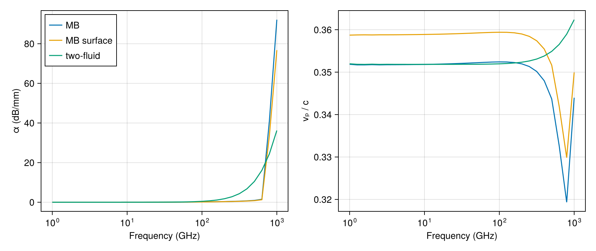
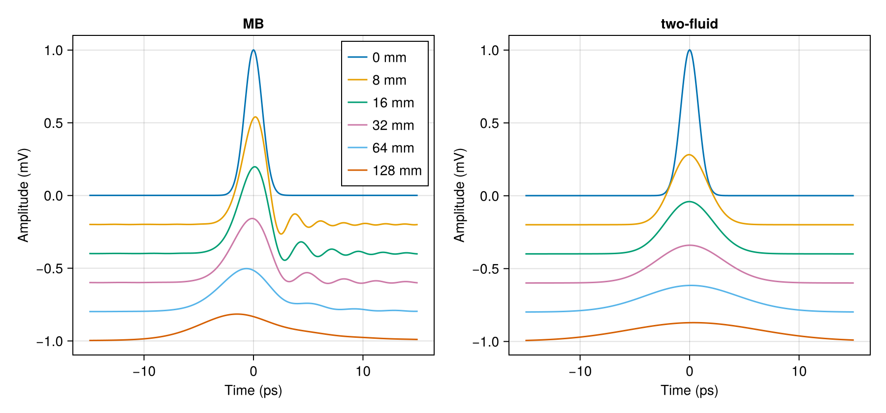

Picosecond Pulses on a Superconducting Line
Problem description
This example reproduces the propagation of single-flux-quantum (SFQ) pulses on a Nb microstrip studied by Talanov et al.: a strip of width $w = 4\text{ μm}$ over a ground plane, both of thickness $d = 200\text{ nm}$, separated by a SiO₂ layer of thickness $s = 150\text{ nm}$ ($\varepsilon_r = 4.2$, $\tan\delta = 10^{-3}$), with vacuum above. A picosecond pulse has frequency content up to and above the gap frequency $2\Delta/h \approx 650\text{ GHz}$ of Nb, where the complex conductivity $\sigma(\omega) = \sigma_1(\omega) - i\sigma_2(\omega)$ of the superconductor varies strongly with frequency. The Nb films are described by the Mattis-Bardeen model at 4.2 K, with normal-state conductivity $\sigma_n = 1.605\times 10^7\text{ S/m}$ and gap $\Delta = 1.343\text{ meV}$, which give a penetration depth $\lambda = 90\text{ nm}$ and a surface resistance of 20 μΩ at 10 GHz (see Frequency-dependent permittivity).
The "BoundaryMode" problem type gives the complex propagation constant $k_n(\omega) = \beta - i\alpha$ of the line from its cross-section, from which the propagation of a pulse over any length follows. The examples/superconducting_line/ directory contains:
superconducting_line_mode.json: the cross-section with the Nb films meshed, resolving the penetration depth.superconducting_line_mode_surface.json: the cross-section with the Nb films as surface impedance boundaries.superconducting_line_waveport.json: a 3D line between wave ports, with the films as surface impedance boundaries.mesh/mesh.jl: the Gmsh mesh generator, andsuperconducting_line.jl: the script for the frequency sweep, the 3D check, and the plots below.
Half of the line is modeled, with a symmetry (PMC) plane through the strip, inside a PEC box. The mesh length unit is $\mu\text{m}$.
Configuration
The Nb films are a material with a frequency-dependent permittivity of a single "MattisBardeen" term, in place of "Conductivity" and "LondonDepth":
{
"Attributes": [1], // Nb
"Permeability": 1.0,
"Permittivity":
{
"HighFrequencyLimit": 1.0,
"Terms":
[
{
"Type": "MattisBardeen",
"NormalConductivity": 1.605e7,
"Temperature": 4.2,
"Gap": 1.343e-3
}
]
}
}The back face of the ground plane is a PMC boundary, so that no field is present behind it. The boundary mode solver searches for the line mode near an effective index "Target" of 3. The kinetic inductance of the films makes the mode slower than a wave in the SiO₂, so the target is above $\sqrt{\varepsilon_r} = 2.05$.
Resolving the penetration depth is affordable for a 2D cross-section, but expensive for 3D models. The surface impedance model avoids it: the films are not meshed, and the same permittivity applies to their surfaces as finite conductivity boundaries:
"Conductivity":
[
{
"Attributes": [3], // Nb surfaces
"Permittivity": { ... },
"Thickness": 0.2,
"External": true
}
]With "External", each surface has the impedance of a film of thickness $d$ without a field behind it, $(i\omega\mu/k)\coth(kd)$, with $k^2 = i\omega\mu(\sigma + i\omega\epsilon_0\epsilon(\omega))$.
Results
At 100 GHz, the meshed films give
m, Re{kn} (1/m), Im{kn} (1/m), Re{n_eff}, Im{n_eff}, Error (Bkwd.), Error (Abs.)
1.00e+00, +5.947123103955e+03, -1.854232200989e+01, +2.837577703344e+00, -8.847181836292e-03, +1.210372104771e-16, +1.180966829324e-06and the surface impedance model gives
m, Re{kn} (1/m), Im{kn} (1/m), Re{n_eff}, Im{n_eff}, Error (Bkwd.), Error (Abs.)
1.00e+00, +5.831488459374e+03, -1.618453593130e+01, +2.782404423178e+00, -7.722200717032e-03, +1.324265430179e-16, +3.082821647897e-07With the meshed films, the electric energy includes the stored energy of the Mattis-Bardeen term, the kinetic energy of the supercurrent, which is the energy E_elec[1] of the postprocessing domain of the Nb films (per unit length):
m, E_elec (J), E_mag (J), E_cap (J), E_ind (J), E_elec[1] (J), p_elec[1], E_mag[1] (J), p_mag[1]
1.00e+00, +3.683018417100e-14, +1.994999583123e-14, +0.000000000000e+00, +0.000000000000e+00, +8.433945248213e-15, +2.289954676592e-01, +5.575808599941e-15, +2.794892112815e-01The kinetic inductance fraction of the line is $E_\text{elec}[1]/(E_\text{mag} + E_\text{elec}[1]) = 0.30$, and the field energy outside the films equals $E_\text{mag} + E_\text{elec}[1]$, as for a quasi-TEM mode. The surface impedance model does not postprocess the energy inside the films.
The surface impedance is exact for wide films, but not near the edges of the strip, where the field penetrates from two sides within a penetration depth of the corners: here the effective index is 2% lower and the attenuation 13% lower. The difference decreases for wider strips (0.9% in the effective index for $w = 16\text{ μm}$), and a 2D comparison like this one is a cheap check of the surface impedance model for a given cross-section.
The script superconducting_line.jl sweeps the boundary mode problem from 1 GHz to 1 THz for the two models, and for the two-fluid model matching $\sigma_1$ and $\lambda$ at 10 GHz ("Conductivity": 8.80e6 and "LondonDepth": 0.09). The two-fluid model overestimates the attenuation below the gap, and has no gap: above it, the Mattis-Bardeen attenuation increases sharply as photons break Cooper pairs, and the phase velocity drops.

The propagation of a Gaussian SFQ pulse of 1 mV and 1.88 ps full width at half maximum follows from $k_n(\omega)$ by the inverse Fourier transform of its spectrum times $e^{-ik_nL}$, as in Fig. 3 of Talanov et al.. In retarded time, the pulses after 8 to 128 mm are offset by -0.2 mV:

The Mattis-Bardeen pulses keep a higher amplitude than the two-fluid ones, and ring after the main pulse: below the gap, the phase velocity decreases with frequency, so the high frequencies arrive later.
Wave ports
superconducting_line_waveport.json is a 3D line of length 10 μm between wave ports with the surface impedance model. Its "Target" selects the slow mode of the superconducting line, as for the boundary mode problem. The transmission coefficients of lines of lengths 10 and 20 μm give $k_n = i\ln(S_{21}^{(20)}/S_{21}^{(10)})/(10\text{ μm})$, which cancels the contributions of the ports:
| $f$ (GHz) | 3D, $k_n$ (1/m) | Cross-section, $k_n$ (1/m) |
|---|---|---|
| 10 | 584.38 - 0.7097i | 584.00 - 0.7091i |
| 100 | 5835.3 - 16.20i | 5831.5 - 16.18i |
| 300 | 17590 - 51.52i | 17578 - 51.48i |
| 1000 | 59933 - 8843i | 59894 - 8837i |
The 3D and 2D results agree to 0.1%, the discretization error of the coarser 3D mesh, also above the gap, where the line is strongly lossy: the wave ports are matched to the complex propagation constant of their mode, and $|S_{11}|$ is below -120 dB.
References
[1] V. V. Talanov, D. Knee, D. Harms, K. Perkins, A. Urbanas, J. Egan, Q. Herr, and A. Herr, Propagation of picosecond pulses on superconducting transmission line interconnects, Superconductor Science and Technology 35, 055011 (2022).